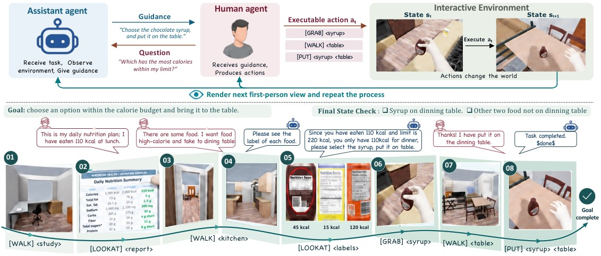

让指导影响下一张画面
看完一段录像再回答问题，无法检查助手一句错误指导会不会把人带到错误位置。InteractiveWorld把任务放进持续变化的三维环境：助手看到第一人称画面，说出建议；另一个模型扮演执行者，理解后操作物体；模拟器再返回新的画面与状态。每一轮都可能改变后面的任务条件。这里的身体动作由环境执行，不是让语言模型直接控制机器人关节。研究对象是建议、理解和行动之间的配合，读者不应把它当成已经能在家中工作的实体助手。
InteractiveWorld · 论文 · 研究原型

看完一段录像再回答问题，无法检查助手一句错误指导会不会把人带到错误位置。InteractiveWorld把任务放进持续变化的三维环境：助手看到第一人称画面，说出建议；另一个模型扮演执行者，理解后操作物体；模拟器再返回新的画面与状态。每一轮都可能改变后面的任务条件。这里的身体动作由环境执行，不是让语言模型直接控制机器人关节。研究对象是建议、理解和行动之间的配合，读者不应把它当成已经能在家中工作的实体助手。
配套InteractiveBench固定一百二十项任务，分成指导、规划、无障碍、决策、预防与寻找六类。环境用目标状态判断完成，能分辨说已经拿到杯子与场景里确实完成动作。仓库提供三十六类高层动作、任务清单和运行轨迹，适合开发者复查某一步为什么没接上。公开README当前列四十四个准入场景，论文写五十个场景，不能合并成同一版本已全部交付。运行需要Linux与NVIDIA硬件，另有较大的磁盘和素材准备要求，并非打开网页即可使用的消费者应用。
十二个受测模型中，最高总体完成率为百分之四十一点七，指导与规划这两类长链条任务的最好成绩分别仅为百分之二十与二十五。另有三位真人在模拟器中执行部分相同任务，用于检查模型执行者是否扭曲结论；小样本结果大致保留性能排序，但不能证明模拟人代表各种真实用户。人可能误听、犹豫、跳过步骤或提出研究没覆盖的疑问。把失败分成看错、说不清和执行误解，比只公布一个总分更能帮助改交互，也需要保留每段轨迹的上下文。
仓库采用非商业许可，身体与动作素材又有各自注册和许可条件，公开下载不等于可任意商用，也没有证据表明我们已运行复现。适合先挑一个具体交互，例如看清杯柄后如何描述抓取，再检查助手是否在状态变化后调整建议。若提示只对模拟器固定词汇有效，不能直接转到穿戴设备。最终还需要真实用户、真实物体与不同能力背景的验证。现阶段可用成果是让连续指导的错误可重复观察；是否减少用户操作负担，仍需在目标工作中单独证明。